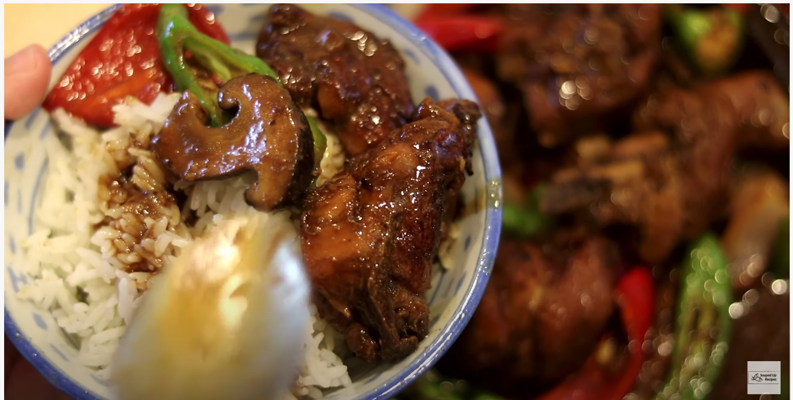

Huang Men Ji
 Huang Men Ji with Rice - Yellow Braised Chicken 黄焖鸡米饭
INGREDIENTS
- 1.5 lb 680 grams) of chicken
- 1 tsp of salt
- 5 cloves of garlic
- 1 tsp of soy sauce (for the marinade)
- 1 tsp of dark soy sauce
- Some white pepper to taste
- 1.5 tbsp of sugar
- 1 piece of star anise
- 1 small piece of cinnamon stick
- 1 piece of bay leaf
- 1 piece of black cardamom
- 2 tbsp of Huang Dou Jiang
- 2 tsp of Tian Mian Jiang
- 2 tbsp of Chinese cooking wine
- 1 tbsp of soy sauce
- 8-10 pieces of shitake mushroom (sliced thinly)
- 1.5 cup of water
- 2 pieces of green chilies
- 2 pieces of red chilies
- 1 small onion
INSTRUCTIONS
- You will need 1.5 lb of chicken (Bone-on and skin-on chicken legs are the best. You can also use boneless chicken breast). Chop the chicken into big pieces.
- Marinade it with 2 inches of crushed ginger, 5 cloves of crushed garlic, 1 tsp of salt, 1 tsp of soy sauce, 1 tsp of dark soy sauce, and some freshly ground white pepper, you can use black pepper as well. Mix and let it sit for 20 minutes.
- While waiting, you can make the sauce: 2 tbsp of Huang Dou Jiang, 2 tsp of Tian Mian Jiang, 2 tbsp of Chinese cooking wine and 1 tbsp of soy sauce. Mix it well. The soybean paste will have a little soiled soybean. I like to use the spatula to crush it. Set the sauce aside, let’s prepare the vegetables.
- For this recipe, I prefer to use fresh shitake mushroom. They are so meaty and tender. Simply slice mushroom in half. Set it aside.
I used 2 colors of chilies so the dish looks nicer. slice it diagonally, into 1/3 of an inch thick piece. The type of chili I use is very spicy. If you don’t eat spicy food, you might want to change to a mild one like bell pepper.
- Cut 1 small size onion into big pieces. Make sure you separate each layer to loosen it up.
- Besides the vegetables, you will also need some spices: bay leaf, star anise, black cardamom, and a small piece of cinnamon. Now, let’s start cooking.
- Heat the wok until it is smoking hot. Add some cooking oil. Swirl the wok around so the oil covers most of the surface of the wok.
Add in the marinade chicken. Spread it so most of the chicken pieces touch the bottom of the wok. Let them fry for a couple of minutes or until you get enough brown surface.
- Take them out and leave the oil in the wok. Also, you want to make sure you take out all the brown bits so the wok is fairly clean. We gonna caramelize some sugar. If there is too much brown bits, it will affect the caramelizing process. Use low heat, keep stirring it.
- Once the sugar turns into a red color, you can pour in the sauce that we prepared before. Keep stirring everything on medium heat. We are frying the sauce. It might sound strange. But it does create some complex flavor. Once you see the oil is separating from the sauce, you can add the spices. Give it a few stirs then introduce the chicken back to the wok. Stir and mix until the chicken is coated with that glossy sauce. Add the mushrooms. Stir them as well.
- Pour in 1.5 cups of water. If you are using boneless chicken breast, you should change to chicken stock instead of water. Cover it, bring it to a boil. Give it a taste to adjust the flavor. Turn the heat to low, simmer this for 20 minutes.
- 20 minutes later, you should still have a fair amount of sauce. And it should be thick due to the collagen from the bones. Throw in the onions and chilies. I like my onions to be a bit raw texture so I only cook them for less than a minutes. Take it out and you are done.